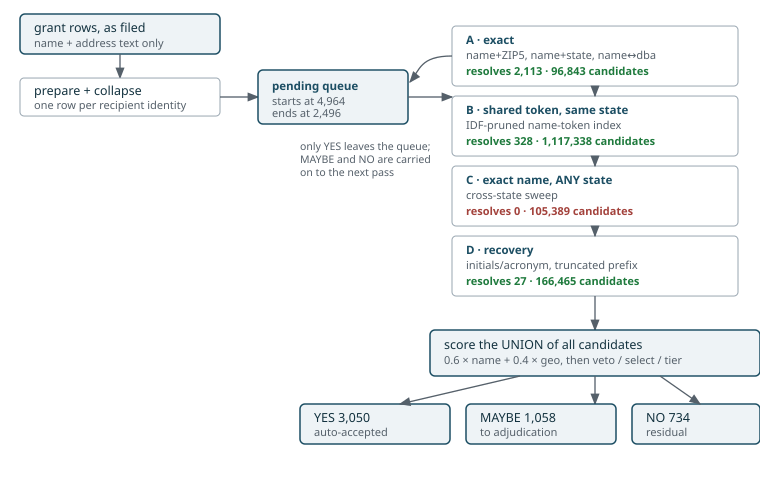

A 990-PF filer types a grantee’s name into Part XIV Table 3a by hand.
There is no EIN, the name is often abbreviated or misspelled, and the
address may be the grantee’s headquarters, a program site, a lockbox, or
the foundation’s own office. pfmatch recovers the
recipient’s EIN by running that text against the IRS Business Master
File through a staged cascade: a sequence of blocking
passes that start tight and loosen, each one only looking at what the
previous passes could not settle.
Where the grants come from
Grants are the PF-P15-T01-SUPPLEMENTARY-INFO-GRANT-PAID
table of the NCCS e-file (ef2) release, retrieved with
pf_efilepf_fetch(), which delegates release resolution to
panel990.
Columns carry the concordance990
v2 research variable names, so the recipient name arrives as
PF_15_G_PAID_RECIP_NAME_ORG_L1 rather than a positional or
legacy label.
pf_efilepf_build() deduplicates superseded filings as it
builds — identical filings collapse, an amended filing supersedes its
original, and filings that disagree with no amendment to settle them are
all kept and flagged. It removes 1.75% of grant rows corpus-wide and
never drops a short-period return for sharing a tax year with a
full-year one. Rows are addressed by OBJECTID | TABLE_ID,
the published row key.
This article walks the passes in order and shows, for each, real cases that clear and real cases that are carried forward. Every number and name below comes from one run — 5,000 grant rows against the augmented unified reference (3,880,431 rows) — not from illustration.
The shape of it

Two mechanics matter more than the pass list, and both are easy to get wrong.
Only YES leaves the queue. After each pass,
np_cascade() removes a query from pending
only if it reached the YES tier. MAYBE and NO stay in, so later
and looser passes keep adding candidates for them. The queue goes 4,964
→ 2,496 over the ten passes that fire.
The final decision is made over the union, not pass by
pass. Every pass’s scored pairs are accumulated; at the end
they are de-duplicated by (query, EIN), keeping the
tightest pass that produced each, and np_select() /
np_tier() run once over that union. So a pass can
generate the winning candidate without being the pass that
resolved the case.
That distinction explains an apparent contradiction between the two tables below. Pass C1 resolves zero queries at the moment it runs, yet one case is finally attributed to it — the candidate C1 generated won after later passes had contributed theirs.
What each pass cost and resolved
| pass | blocks on | candidates | resolved here | still pending |
|---|---|---|---|---|
| A1-name-zip5 | name + ZIP5 (exact) | 16,093 | 1590 | 3374 |
| A2-name-state | name + state (exact) | 79,930 | 423 | 2951 |
| A3-name-dba | name == dba, same state | 793 | 89 | 2862 |
| A4-dba-name | dba == name, same state | 27 | 11 | 2851 |
| B1-token-state | shared token, same state | 364,656 | 275 | 2576 |
| B2-token-concat | shared token + compound, same state | 752,682 | 53 | 2523 |
| C1-name-any | name == name, ANY state | 103,442 | 0 | 2523 |
| C2-dba-any | name == dba, ANY state | 1,947 | 0 | 2523 |
| D1-acronym | shared token incl. initials | 166,447 | 25 | 2498 |
| D2-prefix | name prefix + ZIP5 | 18 | 2 | 2496 |
Final tier, by the pass that generated the winning candidate
| pass | YES | MAYBE | NO | total |
|---|---|---|---|---|
| A1-name-zip5 | 2092 | 293 | 0 | 2385 |
| A2-name-state | 503 | 119 | 0 | 622 |
| A3-name-dba | 73 | 29 | 0 | 102 |
| A4-dba-name | 13 | 0 | 0 | 13 |
| B1-token-state | 314 | 395 | 547 | 1256 |
| B2-token-concat | 49 | 54 | 60 | 163 |
| C1-name-any | 1 | 152 | 50 | 203 |
| C2-dba-any | 0 | 0 | 13 | 13 |
| D1-acronym | 4 | 16 | 61 | 81 |
| D2-prefix | 1 | 0 | 0 | 1 |
Read the two together and the cascade’s economics are stark. Stage A buys 2,113 resolutions for 96,843 candidates. Stage B buys 328 for 1.1 million. Stage C buys nothing at all for 105,389 — and that is not bad luck, it is structural; see Why cross-state passes cannot clear below.
How a case is scored
Blocking only decides which pairs get looked at. The decision is:
score = 0.6 x name + 0.4 x geo
geo = max(zip9 1.00, street 0.95, zip5 0.90, pobox 0.90,
zip3 0.55, city 0.50, state 0.20)
YES score >= 0.78 AND margin >= 0.05
MAYBE score >= 0.65
NO below thatmargin is the gap to the runner-up. It is the second
half of the YES rule and it does most of the work of carrying cases
forward, as the examples show.
Name similarity is floored: below jw_threshold (0.85) it
contributes zero rather than a small amount, so a name
that is merely not-very-similar is treated as no evidence at all.
Stage A — exact
Four passes, each an exact join on a composite key, differing in which key and which name version. They are cheap, they are the most precise thing available, and they do most of the work.
A1 · name + ZIP5
The tightest pass in the cascade: the normalized name and the 5-digit ZIP must both match exactly.
| role | tier | filed name | st | matched BMF name | score | margin |
|---|---|---|---|---|---|---|
| carried forward | MAYBE | ST SAHAG ARMENIAN CHURCH | MN | SAINT SAHAG ARMENIAN CHURCH | 0.98 | 0.00 |
| carried forward | MAYBE | ST PETERS HOSPITAL FOUNDATION | NY | SAINT PETERS HOSPITAL FOUNDATION | 0.98 | 0.02 |
| clears (hard) | YES | METROPOLITAN OPERA GUILD INC | NY | METROPOLITAN OPERA GUILD | 0.96 | 0.05 |
| clears (regular) | YES | SAN FRANCISCO SYMPHONY | CA | SAN FRANCISCO SYMPHONY | 0.98 | 0.98 |
SAN FRANCISCO SYMPHONY is the regular case — exact name,
exact ZIP, nothing else close, margin 0.98.
METROPOLITAN OPERA GUILD INC is the hard version of the
same shape. The name matches exactly after the corporate suffix
is stripped, but the Metropolitan Opera family has several similarly
named entities in one ZIP, so the margin falls to exactly 0.05 — the
threshold. One notch lower and it would not have cleared.
The two carried-forward cases are the pattern worth internalising:
both score 0.98 with a perfect name similarity, and are MAYBE
anyway. ST SAHAG ARMENIAN CHURCH matched
SAINT SAHAG ARMENIAN CHURCH with
name_sim = 1.000, and its margin is 0.000
— a second reference row scored identically. Nothing is wrong with the
name; there are simply two candidates the evidence cannot separate. That
is a tie, not a failure, and it is the single most common reason a tight
pass hands a case onward.
A2 · name + state
Loosens the geography from ZIP5 to state, which widens the candidate pool roughly fivefold (79,930 candidates against 16,093).
| role | tier | filed name | st | matched BMF name | score | margin |
|---|---|---|---|---|---|---|
| carried forward | MAYBE | NASHVILLE BALLET | TN | NASHVILLE BALLET | 0.98 | 0.00 |
| carried forward | MAYBE | Wake Forest University | NC | WAKE FOREST UNIVERSITY | 0.98 | 0.00 |
| clears (hard) | YES | CARNEGIE MELLON UNIVERSITY | PA | CARNEGIE MELLON UNIVERSITY | 0.90 | 0.08 |
| clears (regular) | YES | ZOOLOGICAL SOCIETY OF MILW | WI | ZOOLOGICAL SOCIETY OF MILW | 0.98 | 0.98 |
CARNEGIE MELLON UNIVERSITY is the instructive clear.
Score 0.900, not 0.98 — the name is exact but only the state
corroborates, so geo contributes 0.4 x 0.50 rather than
0.4 x 0.90. It still clears because the margin is 0.08.
NASHVILLE BALLET and Wake Forest University
are carried forward on margin 0.000 again, and both have exact names. A
state-level match cannot separate a university from its own foundation
or medical centre.
A3 / A4 · the DBA cross-products
A3 matches the filed name against the reference’s DBA; A4 matches a filed DBA against the reference’s legal name. These recover organisations that transact under a name that is not their legal one.
| role | tier | filed name | st | matched BMF name | score | margin |
|---|---|---|---|---|---|---|
| carried forward | MAYBE | UNIVERSITY OF MONTANA | MT | University Of Montana | 0.98 | 0.00 |
| carried forward | MAYBE | SUMMA FOUNDATION | OH | Summa Foundation | 0.98 | 0.00 |
| clears (hard) | YES | SYRACUSE UNIVERSITY | NY | Syracuse University | 0.96 | 0.06 |
| clears (regular) | YES | ARABIA SHRINERS | TX | Arabia Shriners | 0.98 | 0.98 |
| role | tier | filed name | st | matched BMF name | score | margin |
|---|---|---|---|---|---|---|
| clears (hard) | YES | ST JUDE’S CHILDREN’S RESEARCH | TN | SAINT JUDES CHILDRENS RESEARCH HOSPITAL | 0.96 | 0.061 |
| clears (regular) | YES | SANTA BARBARA TRUST FOR HISTORIC | CA | SANTA BARBARA TRUST FOR HISTORIC PRESERVATION | 0.98 | 0.980 |
ST JUDE'S CHILDREN'S RESEARCH →
SAINT JUDES CHILDRENS RESEARCH HOSPITAL is the
characteristic A4 case: the filed string is the familiar public name,
the reference row carries the legal one, and only the DBA path connects
them.
A5 (dba == dba) produced no candidates at
all on this run. It is retained because it costs nothing when
it does not fire.
Stage B — shared token, same state
Where exactness fails, B blocks on a shared name token
within state, using an inverted index with IDF-weighted pruning: a pair
is kept only if its shared tokens carry enough information
(min_pair_idf = 8), and tokens appearing in more than
25,000 reference records are dropped entirely. This is what makes the
cascade scale — without it, every query would be compared against every
same-state organisation.
| role | tier | filed name | st | matched BMF name | score | margin |
|---|---|---|---|---|---|---|
| carried forward | MAYBE | BOYS AND GIRLS CLUB OF TAMPA BAY INC | FL | BOYS AND GIRLS CLUBS OF TAMPA BAY | 0.974 | 0.000 |
| carried forward | MAYBE | DENTAL LIFELINE NETWORK | CO | Dental Lifeline Network-Nc | 0.966 | -0.014 |
| clears (hard) | YES | AMERICAN FRIENDS OF MAGEN DAVID ADOM | NY | AMERICAN FRIENDS OF MAGEN DAVID ADO | 0.954 | 0.054 |
| clears (regular) | YES | Friends of South Georgia Is | CO | FRIENDS OF SOUTH GEORGIA ISLAND | 0.954 | 0.954 |
| role | tier | filed name | st | matched BMF name | score | margin |
|---|---|---|---|---|---|---|
| carried forward | MAYBE | CAPITAL AREA FOODBANK | DC | CAPITAL AREA FOOD BANK | 0.971 | 0.000 |
| carried forward | MAYBE | UNITED NATIONS ASSOCIATION OF USA | NY | UNITED NATIONS ASSOCIATION OF THE USA | 0.958 | 0.000 |
| clears (hard) | YES | INTERNATIONAL CITY THEATRE (ICT) | CA | INTERNATIONAL CITY THEATRE | 0.953 | 0.066 |
| clears (regular) | YES | CARBON180 | DC | CARBON 180 | 0.960 | 0.960 |
B is where the first genuinely wrong answers appear, and where NO becomes a real outcome (547 and 60 cases). Two carried-forward cases show different mechanisms:
-
BOYS AND GIRLS CLUB OF TAMPA BAY INC→BOYS AND GIRLS CLUBS OF TAMPA BAYat 0.974 with margin 0.000. Almost certainly correct, held back by a tie — a chapter federation has many near-identical rows. -
DENTAL LIFELINE NETWORK→Dental Lifeline Network-Ncwith margin −0.014. A negative margin: the runner-up outscored the chosen candidate after the tie-break. The filer named the national body; the state affiliate scored higher. No amount of name similarity resolves that — it needs the grant’s purpose or the funder’s geography.
B2 adds de-spaced compounds as extra tokens, which is how
CARBON180 reaches CARBON 180 and
CAPITAL AREA FOODBANK reaches
CAPITAL AREA FOOD BANK.
Stage C — exact name, any state
C drops the state requirement entirely, for the case where the filed address is a lockbox or the funder’s own office rather than the grantee’s.
| role | tier | filed name | st | matched BMF name | score | margin |
|---|---|---|---|---|---|---|
| carried forward | MAYBE | HARRY S TRUMAN LIBRARY INSTITUTE | VA | HARRY S TRUMAN LIBRARY INSTITUTE | 0.72 | 0.07 |
| carried forward | MAYBE | MAKE A WISH FOUNDATION | OH | MAKE A WISH | 0.72 | 0.00 |
| clears (regular) | YES | NATIONAL WORLD WAR II MUSEUM | CO | NATIONAL WORLD WAR II MUSEUM | 0.98 | 0.90 |
| role | tier | filed name | st | matched BMF name | score | margin |
|---|---|---|---|---|---|---|
| carried forward | NO | HIGHER GROUND | ID | Higher Ground | 0.6 | 0.00 |
| carried forward | NO | ROSARY ACADEMY | CA | Rosary Academy | 0.6 | 0.52 |
Why cross-state passes cannot clear
C1 and C2 generate 105,389 candidates and resolve zero. The reason is arithmetic, not data:
A cross-state pair has no geographic corroboration. The state
conflict gate zeroes the city and ZIP3 terms deliberately — a shared
city name across two states is a coincidence of naming, not evidence —
so geo = 0 and
score = 0.6 x name + 0.4 x 0 <= 0.6000.600 is below the 0.65 MAYBE floor, let alone the
0.78 YES threshold. A perfect cross-state name match cannot
reach MAYBE on its own. HIGHER GROUND and
ROSARY ACADEMY both sit at exactly 0.600 with
name_sim = 1.000 and are NO.
HARRY S TRUMAN LIBRARY INSTITUTE reaches 0.720 only because
its state term fires.
So stage C does not function as an acceptance pass. It functions as a
candidate supplier for adjudication: 152 cases finally
attributed to C1 are MAYBE, meaning the cross-state candidate it
surfaced became the best available answer once a reviewer looks. Whether
105,389 candidates is a fair price for 152 review candidates is a live
question — a related unblocked token pass (C3) was measured
and rejected for yielding zero YES.
Stage D — recovery
D runs last, on whatever remains, and addresses two specific filing habits.
D1 · acronym. Blocks on name_acro,
which is the name key plus the record’s initials, so
ICT can meet INTERNATIONAL CITY THEATRE and
UCAP can meet
URBAN COLLABORATIVE ACCELERATED PROGRAM.
D2 · truncated prefix. Blocks on the first 18
characters of the name plus an exact ZIP5. The prefix alone is far too
blunt — AMERICAN ASSOCIATION OF PRO-LIFE OBSTETRICIANS and
AMERICAN ASSOCIATION OF ZOO KEEPERS share one — so it is
paired with the ZIP, and on the query side it fires only for names the
parser flagged as actually cut off.
| role | tier | filed name | st | matched BMF name | score | margin |
|---|---|---|---|---|---|---|
| carried forward | MAYBE | CONGREGATION SHAARE TEFILAH | NY | CONGREGATION SHAARA TEFILLE | 0.900 | 0.000 |
| carried forward | MAYBE | ART FOR AUTISM | FL | ARTS FOR AUTISM FOUNDATION | 0.900 | 0.255 |
| clears (hard) | YES | ST JOHN’S LUTHERAN CHILDCARE | NY | SAINT JOHN LUTHERAN CHURCH | 0.896 | 0.132 |
| clears (regular) | YES | ACCESS SPORTS AMERICA | MA | ACCESS SPORT AMERICA | 0.970 | 0.750 |
| role | tier | filed name | st | matched BMF name | score | margin |
|---|---|---|---|---|---|---|
| clears (regular) | YES | UKRAINIAN CATHOLIC EDUCATION FOUNDA | NY | UKRAINIAN CATHOLIC EDUCATION FOUNDATION | 0.94 | 0.86 |
ACCESS SPORTS AMERICA →
ACCESS SPORT AMERICA (singular/plural) and
ST JOHN'S LUTHERAN CHILDCARE →
SAINT JOHN LUTHERAN CHURCH are the regular and hard
versions: the first is a one-character difference with a 0.75 margin;
the second clears at 0.896 on a name similarity of only 0.894, carried
by a strong address match, and is the kind of case where the
childcare programme and the church may or may not be
the same filer-intended payee.
CONGREGATION SHAARE TEFILAH →
CONGREGATION SHAARA TEFILLE is a transliteration difference
— two vowels — carried forward on a 0.000 margin because several
transliterations of the same congregation name exist.
Why cases do not clear
Across all the carried-forward examples, three mechanisms account for nearly everything, and only the third is what most people picture:
-
Ties. Score is high,
name_simis often exactly 1.000, andmarginis 0.000. The right answer may well be in the list; the evidence cannot single it out. Dominant at stages A and B. - The structural cap. No geographic corroboration means the score cannot exceed 0.600, so the case cannot reach MAYBE however good the name. Dominant at stage C.
- Genuine ambiguity. Parent against chapter, institution against its own foundation, operating entity against its endowment. These have two defensible answers and no amount of string comparison settles them.
This is why there is no automatic acceptance of the MAYBE tier. A rule of “ZIP5 agrees and margin ≥ 0.05” was measured at 100% precision on 18 cases, then at 72% on 200 fresh ones — because 79% of the cases it fired on were token-overlap matches, which the scorer deliberately caps below YES precisely because containment cannot separate a parent from a chapter.
What happens next
pf_adjudicate() builds the review sheet: per candidate,
the BMF name and address, NTEE code and definition, activity text,
subsection and assets, plus the grant purpose and the filing
foundation’s own NTEE and state — and, for every candidate rather than
only the top pick, the NTEEv2 description and the Form 990 Part III
mission and programme text. Adding that text was measured to resolve 45
of 56 hard cases.
Two things to know before using it:
-
NONEis a correct and common answer. In a labelled sample, 24 of 82 hard cases had no correct candidate in the list at all. A reviewer who assumes one of the five is right manufactures false positives. - Prioritise by dollars. Grant amounts are heavily skewed; roughly 740 reviews covers 70% of the recoverable unresolved dollars.
To score a configuration rather than argue about its clear rate, see
pf_evaluate() and pf_consistency().